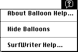

Legacy Document
Important: The information in this document is obsolete and should not be used for new development.
Important: The information in this document is obsolete and should not be used for new development.


Adding Menu Items to the Help Menu
The Help menu is specific to each application, just as the File and Edit menus are. The Help menu items defined by the Help Manager should be common to all applications, but you can add your own menu items for help-related information.If you provide your users with help information in addition to help balloons, you should append a command to the Help menu for this information. The Help menu gives users one consistent place to obtain help information.
When adding your own items to the Help menu, include the name of your application in the command so that users can easily determine which application the help command relates to. For example, Figure 3-22 shows the Help menu with an item appended to it by the active application.
Figure 3-22 The Help menu with an appended menu item
 You add items to the Help menu by using the
HMGetHelpMenuHandlefunction and by providing an'hmnu'resource and specifying thekHMHelpMenuIDconstant as the resource ID.The
HMGetHelpMenuHandlefunction returns a copy of the handle to the Help menu. Do not use the Menu Manager functionGetMenuHandleto get a handle to the Help menu, becauseGetMenuHandlereturns a handle to the global Help menu, not the
Help menu that is specific to your application. Once you have a handle to the Help menu that is specific to your application, you can add items to it using theAppendMenuprocedure or other Menu Manager routines. For example, this code adds the menu item displayed in Figure 3-22.
VAR mh: MenuHandle; err: OSErr; BEGIN err := HMGetHelpMenuHandle(mh); IF err = noErr THEN IF mh <> NIL THEN BEGIN AppendMenu(mh, 'SurfWriter Help...'); END; DrawMenuBar; END;Be sure to use an'hmnu'resource to provide help balloons for items you've added to the Help menu. Use thekHMHelpMenuIDconstant (-16490) to specify the'hmnu'resource ID. After the header component of the'hmnu'resource, provide a missing-items component and then the components for your appended items. You don't provide a menu-title component here; instead, the Help Manager automatically creates the help balloons for the Help menu title and the standard Help menu items. The Help Manager also automatically adds a divider line between the end of the standard Help menu items and your appended items.Listing 3-19 shows an
'hmnu'resource for the appended menu item shown in
Figure 3-22.Listing 3-19 Rez input for specifying help balloons for items in the Help menu
resource 'hmnu' (kHMHelpMenuID, "Help", purgeable) { HelpMgrVersion, 0, 0, 0, /*header component*/ HMSkipItem { /*missing-items component*/ /*no missing items, so skip to first appended menu-item */ /* component*/ }, { /*first menu-item component: SurfWriter Help command*/ HMStringResItem { /*use an 'STR#' for help messages*/ 146, 1, /*'STR#' res ID, index when item is enabled*/ 146, 2, /*'STR#' res ID, index when item is dimmed*/ 146, 3, /*'STR#' res ID, index when item is checked*/ 0, 0 /*item can't be marked*/ }, } }; resource 'STR#' (146, "My help menu items' strings") { { /*array StringArray: six elements*/ /*[1] enabled SurfWriter Help command help text*/ "Offers tutorial help for the SurfWriter text processor."; /*[2] dimmed SurfWriter Help command help text*/ "Offers tutorial help for the SurfWriter text processor. " "Not available until you open a SurfWriter document."; /*[3] checked SurfWriter Help command help text*/ "Closes tutorial help for the SurfWriter text processor."; } };As previously explained in "Providing Help Balloons for Menus" beginning on page 3-24, the'hmnu'resource allows you to specify help balloons for four states of a menu item: enabled, dimmed, enabled and checked, and enabled and marked with a symbol other than a checkmark. You cannot specify a help balloon for a Help menu item that system software dims when an alert box or a modal dialog box appears, because you don't have access to the missing-items component of the Help menu. When an alert box or a modal dialog box appears, the Help Manager displays a default help balloon for all dimmed Help menu items.The Help Manager automatically processes the event when a user chooses any of the standard menu items in the Help menu. The Help Manager automatically enables and disables help when the user chooses Show Balloons or Hide Balloons from the Help menu. The setting of help is global and affects all applications.
The
MenuSelectandMenuKeyfunctions return a result with the menu ID in the high word and the menu item in the low word. Both functions return thekHMHelpMenuIDconstant (-16490) in the high word when the user chooses an appended item from the Help menu. The menu item number of the appended item is returned in the low word of the function result. TheDoMenuCommandprocedure shown in Listing 3-20 handles mouse clicks for those items defined by the application to appear in the Help menu.Listing 3-20 Responding to the user's choice in a menu command
PROCEDURE DoMenuCommand (menuResult: LongInt); VAR menuID, menuItem: Integer; BEGIN menuID := HiWrd(menuResult); {get menu ID} menuItem := LoWrd(menuResult); {get menu item number} CASE menuID OF mApple: DoAppleMenuCommand(menuItem); mFile: DoFileMenuCommand(menuItem); mEdit: DoEditMenuCommand(menuItem); mFont: DoFontMenuCommand(menuItem); kHMHelpMenuID: DoHelpMenuCommand(menuItem); END; HiliteMenu(0); END;In the future, Apple may choose to add other items to the Help menu. To determine the number of items in the Help menu, call theCountMItemsfunction, which is described in the chapter "Menu Manager" in Inside Macintosh: Macintosh Toolbox Essentials.